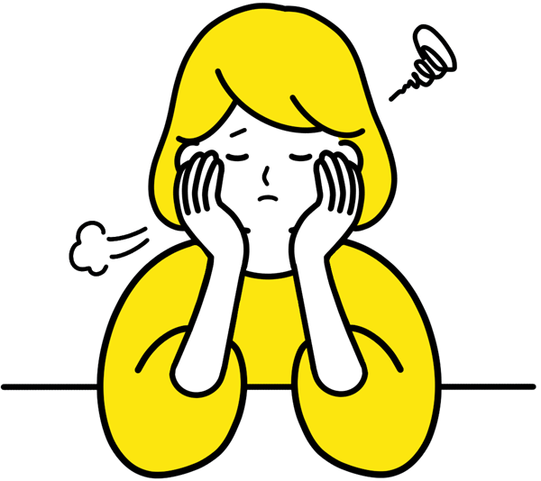

入試方式の比較
METHODS
※一般的な特徴をまとめたものです。本学の出願条件・選考方法は学生募集要項でご確認ください。
受験までの1年間
STUDY PLAN

{{ p.no }}{{ p.when }}
{{ p.title }}
{{ p.text }}
時間管理のコツ
{{ t.title }}
{{ t.text }}
科目別の対策ポイント
SUBJECTS

{{ tip.no }}
{{ tip.text }}
対策資料